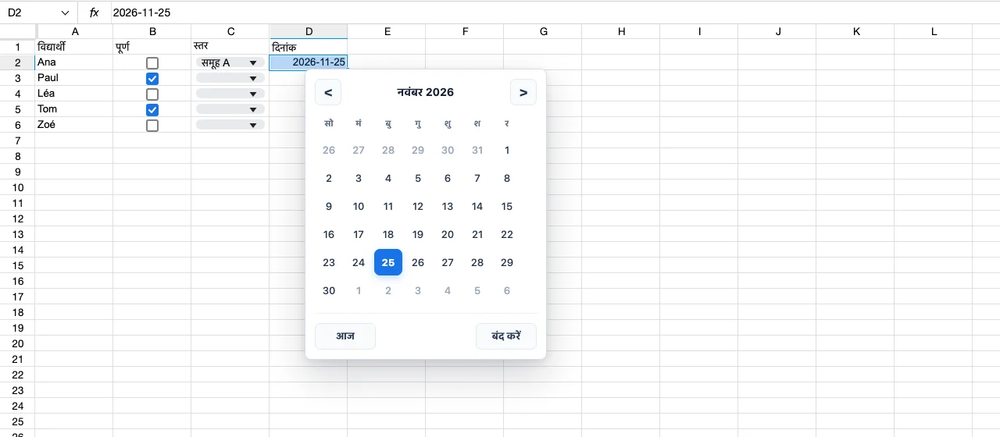

चेकबॉक्स, सूचियाँ और कैलेंडर

चेकबॉक्स
सेल चुनें, डालें › चेकबॉक्स। क्लिक निशान लगाता या हटाता है; सेल का मान TRUE या FALSE है।
=IF(B2, "हो गया", "बाकी")
=SUMPRODUCT(B2:B6, C2:C6)
=SUMPRODUCT(B2:B6, B2:B6)दूसरा सूत्र कॉलम C के उन मानों को जोड़ता है जिनके चेकबॉक्स पर निशान है; तीसरा निशान गिनता है।
ड्रॉप-डाउन सूचियाँ
सेल चुनें, डालें › ड्रॉपडाउन…।
| स्रोत | सामग्री |
|---|---|
| मान | विकल्प, हर फ़ील्ड में एक; विकल्प जोड़ें; बिना अल्पविराम |
| किसी श्रेणी से | रेंज जिसके सेल विकल्प हैं: शीट2!$A$1:$A$10 |
बिना $ वाली रेंज भरे गए सूत्र की तरह सेल दर सेल खिसकती है। उसके सेल बदलें तो विकल्प भी बदलते हैं।
सेल में तीर दिखता है; क्लिक विकल्प खोलता है। सूची से बाहर का मान स्वीकार नहीं होता।
कैलेंडर
दिनांक वाले सेल पर डबल क्लिक कैलेंडर खोलता है: दिन चुनें, < और > से महीना बदलें, आज के लिए आज। यह दिनांक प्रारूप वाले हर सेल पर खुलता है, खाली पर भी, जब तक उसमें सूत्र न हो या वह लॉक न हो।
कैलेंडर से भरे जाने वाले दिनांक कॉलम के लिए: उसे चुनें और दिनांक प्रारूप दें।
हटाना
Delete सेल से चेकबॉक्स या सूची, मान सहित, हटाता है।
चेकबॉक्स और सूचियाँ Excel फ़ाइल में सहेजी जाती हैं; वहाँ चेकबॉक्स Excel के चेकबॉक्स होते हैं।